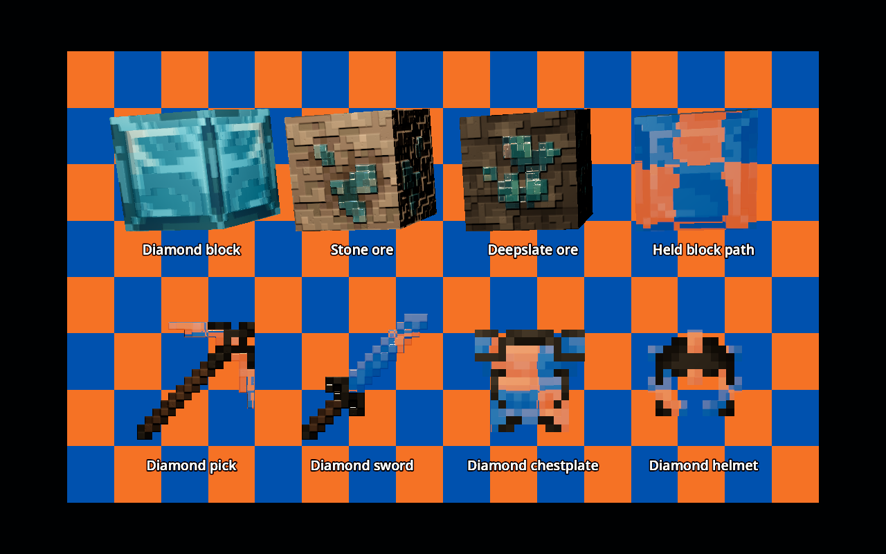
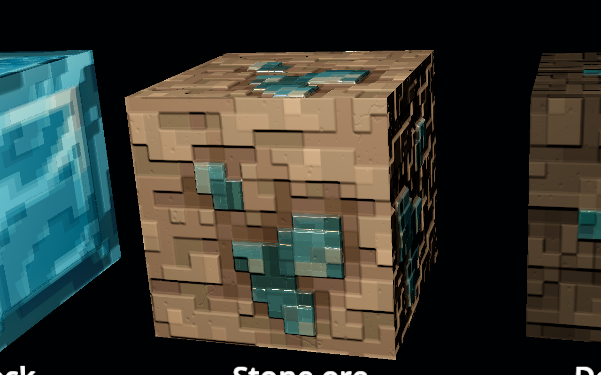
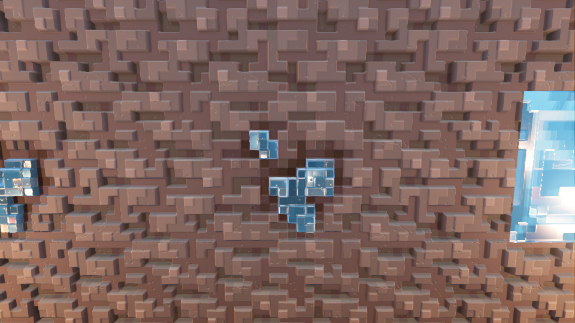
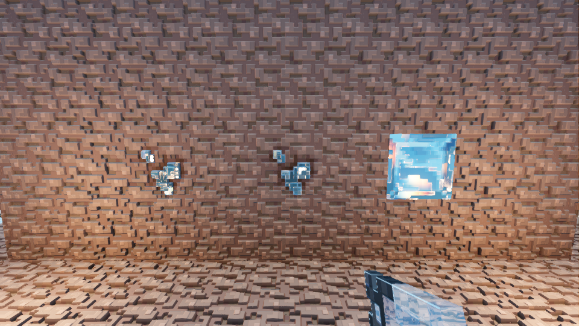
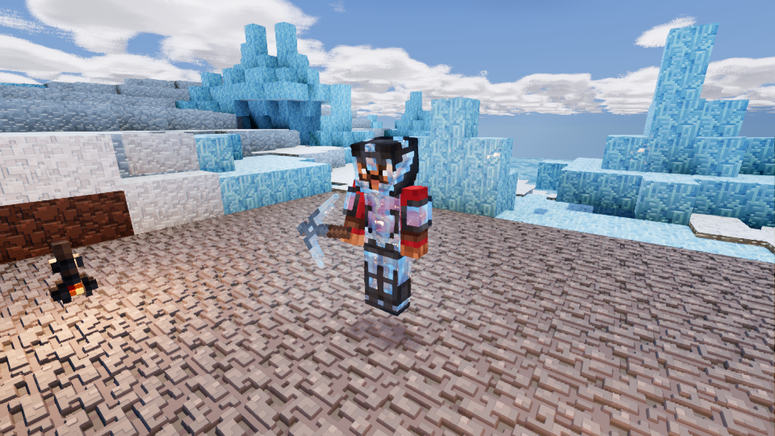

Production item shaders on offline cubes and cards. The checkerboard bends through individual crystal facets. The held block at top right shows this most clearly. Wood handles remain solid.

The shader traces a shallow recess under each visible crystal and samples reconstructed local stone through it. This is a virtual recess in the existing face, without additional mesh geometry or holes into hidden terrain.

Luanti 5.17.0 with Godot 4.5.1. The armour capture uses a detached camera and the player's full-body mesh for inspection.



Item refraction samples the opaque screen image. It cannot see offscreen or other transparent objects. Ore backing is inferred from surrounding stone art. Geometry would be needed for protruding crystal silhouettes.